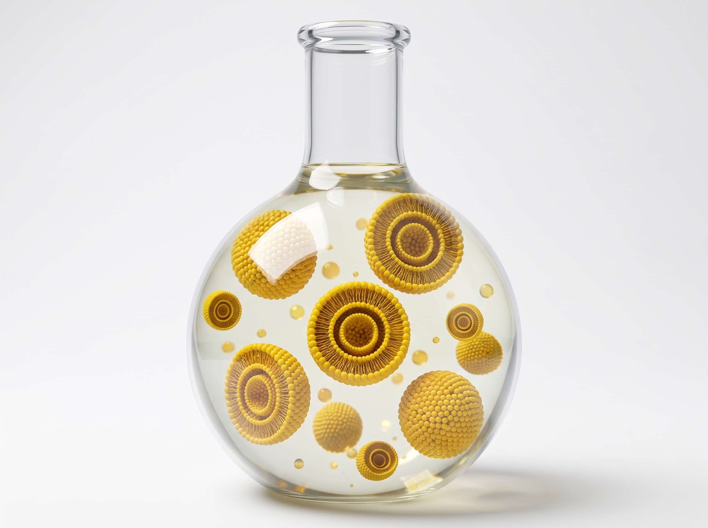
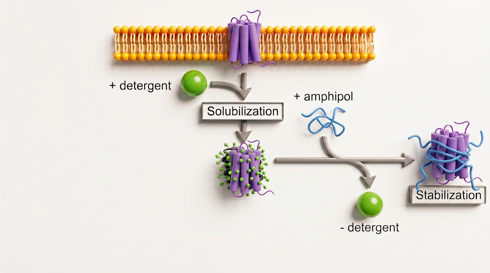
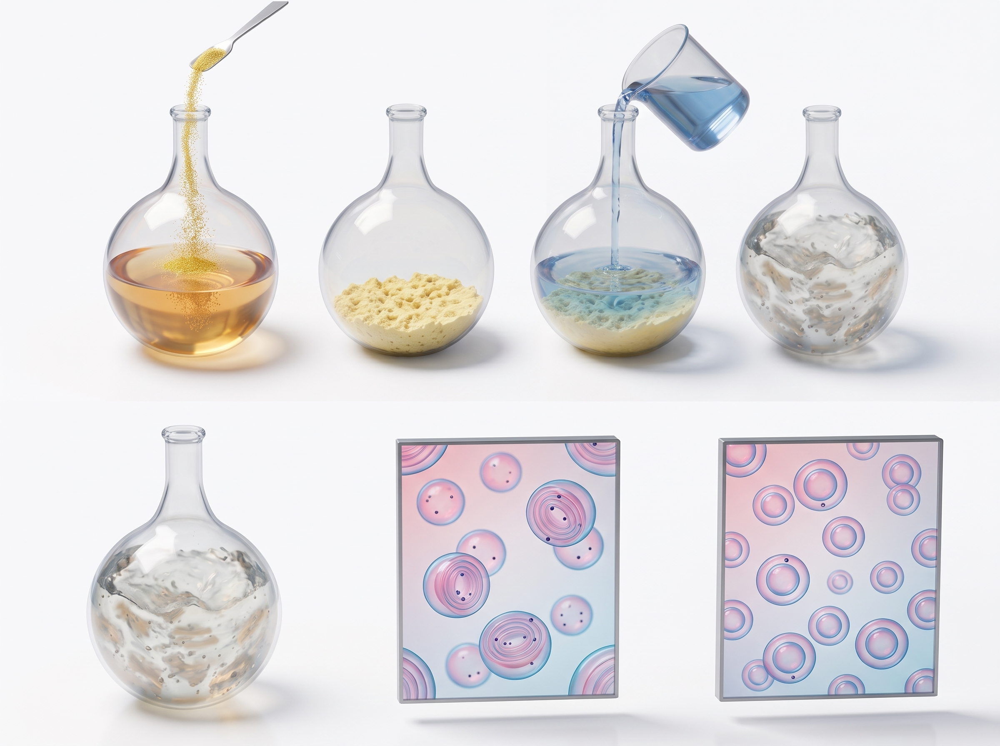

Overview & Biomaterials Vision
Our interdisciplinary research program bridges synthetic polymer chemistry, surface bioconjugation, and membrane biophysics to solve critical challenges in membrane protein structural biology, viral neutralization, and translational immunoengineering.
Across 7+ years of research (producing 9 peer-reviewed publications), we have built an integrated experimental platform spanning reversible addition-fragmentation chain transfer (RAFT) copolymerization, nucleophilic ring-opening bioconjugation, liposome and lipid-nanoparticle (LNP) formulation, and multi-scale biophysical characterization (CW-EPR, 1D 1H & DOSY NMR, SEC/GPC, HPLC, DLS, TEM/SEM, and Rheometry).

1. Liposomal, Lipid-Based & Polymeric Nanoparticle Engineering (VEMALPs & SMALPs)
Biomacromolecules 2024 • Polym. Chem. 2026Traditional detergents strip essential annular lipids from transmembrane proteins, leading to loss of native conformation and function. While styrene–maleic acid (SMA) copolymers form detergent-free lipid nanodiscs (SMALPs), their aromatic styrene rings absorb strongly in the UV region (260–280 nm), interfering with optical protein quantification and spectroscopy.
- Aliphatic VEMA Copolymer Platform: Pioneered alternating vinyl ether–maleic acid (VEMA) copolymers carrying butyl and dodecyl side chains that self-assemble with POPC, POPG, and DMPC bilayers into UV-transparent, native-like lipid nanodiscs (VEMALPs) (Biomacromolecules 2024).
- Programmable Nanoparticle Sizing (3–60 nm): Engineered chain-extended amphiphilic block copolymers (VEMA-b-nBA and VEMA-b-tBA/AA) that precisely tune nanodisc diameters from 60 nm down to 3 nm while preserving payload integrity (Polymer Chemistry 2026).
- Lipid Saturation & Topology Studies: Systematically resolved how phospholipid acyl-chain saturation and polymer architecture govern nanodisc assembly and membrane dynamics (BBA - Biomembranes 2025; Biophysical Chemistry 2025; Chemistry and Physics of Lipids 2025).

2. Modular Bioconjugation & Surface Functionalization (PEG, Amino Acids & VEMADs)
9 Charge-Tunable Derivatives • pH 3–9 & 30 mM Mg²⁺Controlling how lipid nanoparticles and polymeric scaffolds interact with biological membranes and immune cells requires exact chemical control over surface charge, steric shielding, and ligand presentation. Moreover, conventional carboxylate-rich polymers precipitate in the presence of divalent cations (Mg2+, Ca2+) or acidic pH.
- Nucleophilic Ring-Opening Bioconjugation: Exploited reactive maleic anhydride moieties along the VEMA backbone as a versatile chemical handle for catalyst-free ring-opening conjugation with polyethylene glycol (PEG) chains, amino acids, and cationic, anionic, and zwitterionic modifiers.
- 9 Charge-Tunable Derivatives (VEMADs): Synthesized and characterized 9 distinct surface-functionalized VEMA derivatives that eliminate divalent cation sensitivity and maintain complete colloidal stability across pH 3.0–9.0 and up to 30 mM Mg2+.

3. Precision RAFT Chemical Synthesis & Small-Molecule CTA Screening
Polymer 2026 • Biomacromolecules 2024Spearheaded the rational synthesis and kinetic modeling of alternating and block vinyl ether–maleic anhydride (VEMA) copolymers via Reversible Addition-Fragmentation Chain Transfer (RAFT) polymerization:
- Small-Molecule CTA Synthesis & Screening: Synthesized and screened 4 small-molecule chain transfer agents (iBADTC, PADTC, EtPAX, PAETC) to control electron-rich vinyl ether and electron-deficient maleic anhydride copolymerization.
- Programmable Molecular Weights & Narrow Dispersity: Achieved predictable molecular weights (Mn = 6–40 kDa) and narrow dispersity (Ð ∼ 1.3–1.5) with high end-group fidelity enabling clean block extension with hydrophobic and hydrophilic acrylates (Polymer 2026; Polymer Chemistry 2026).
4. Ultra-Mild (<60 s) Rapid Nanoparticle Formulation & Thin-Film Fabrication
Rapid (<60 s Assembly) • Anal. Biochem. 2022Sensitive biological cargoes and multi-pass transmembrane receptors frequently denature when exposed to organic co-solvents, prolonged sonication, mechanical shear, or repeated freeze–thaw cycles.
- Spontaneous <60 s Aqueous Self-Assembly: Designed aliphatic special type of VEMA copolymers that achieve spontaneous aqueous self-assembly with phospholipid bilayers in under 60 seconds at room temperature without mechanical shear or organic co-solvents.
- Long-Term Colloidal Monodispersity: Maintains monodisperse ∼10 nm nanoparticle dimensions and colloidal stability for over 72 hours.
- Scalable Substrate Thin-Film Fabrication: Co-developed a rapid, scalable thin-film hydration method on solid substrates to generate uniform lipid nanoparticles (Analytical Biochemistry 2022).
